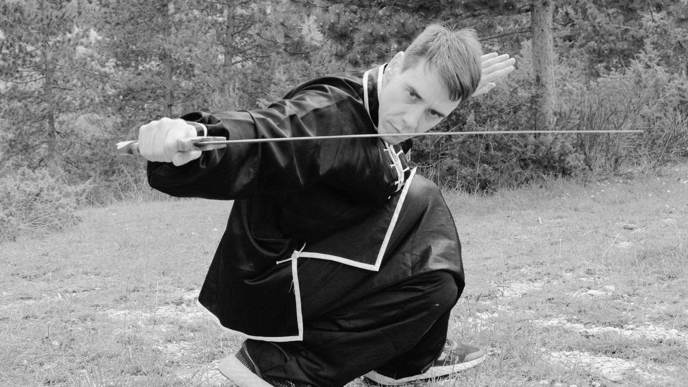

Curriculum marziale
Nato a Terni il 7 luglio 1990, Alessandro Bufi è un medico-chirurgo specialista in emergenza-urgenza che ha iniziato a praticare arti marziali nel 2001, all’età di 11 anni, sotto la guida del Maestro Luca Primavera. La sua passione per le arti marziali è nata quasi per caso, ma è cresciuta rapidamente, portandolo a ottenere la cintura nera il 21 giugno 2008.
Guidato dai Maestri Luca Primavera e Maurizio Zanetti, Alessandro ha approfondito lo studio dello stile Hung-Gar, ottenendo il titolo di aiuto-allenatore e poi di allenatore di kung fu tradizionale presso la scuola di Terni e l'Associazione Internazionale Long-Zhao. Il 12 giugno 2010 ha raggiunto il grado di 1° DUAN.
Parallelamente, ha intrapreso lo studio della boxe cinese (Sanda), partecipando a numerose competizioni nazionali e diventando campione europeo nel febbraio 2012. Nel 2010 si è certificato come istruttore di Sanda e nel 2011 ha iniziato a insegnare nella squadra agonistica di kung fu, preparando gli atleti per le gare di Taolu e Sanda.
Negli anni accademici 2010/2011 e 2011/2012 è stato responsabile e insegnante del Corso Propedeutico di Introduzione al Kung-Fu per bambini di 3, 4 e 5 anni. Il 25 marzo 2012 è diventato arbitro ufficiale di gara di primo livello del CONI, superando l'esame di abilitazione. Da allora, ha partecipato a più di 50 competizioni (regionali, nazionali e internazionali) come Ufficiale di Gara, ricoprendo vari ruoli tra cui arbitro centrale, laterale, presidente di giuria, responsabile generale organizzativo e direttore di gara.
Insieme al Maestro Primavera, ha organizzato la prima gara di Arti Marziali a Terni (Warriors Cup), con oltre 200 partecipanti, promuovendo le arti marziali in Umbria. Per il suo impegno nella diffusione delle arti marziali, è stato nominato “Ambasciatore dello Sport” dal Comune di Terni.
Il 16 giugno 2012 ha ottenuto il grado di 2° DUAN con una valutazione di 9,80/10 e il titolo di Istruttore di Kung Fu tradizionale. Dal 2015 ha iniziato a studiare Taichi Chen sotto la guida dei Maestri Zanetti e Primavera, diventando istruttore certificato di Taichi e Qigong nel 2017.
Dal 2020 è docente nei corsi di formazione CSEN per allenatori di arti marziali e responsabile della formazione arbitrale presso CSEN Roma. Dal 2021 è responsabile del gruppo arbitrale CSEN di Roma, con incarichi di organizzazione e gestione della sezione arbitrale.
Dal 2022 è tecnico formatore dell’accademia “Iomidifendo sistema”, che insegna un sistema di autodifesa legale con capsicum. Attualmente continua a insegnare presso l'Accademia Arti Marziali Terni (tradizionale, Taichi e Sanda) e arbitra gare nazionali e internazionali di GongFu e Sanda, formando nuovi arbitri.
Il 17 dicembre 2023, dopo 23 anni di pratica, ha ricevuto la qualifica di Maestro II DUAN di Kung Fu Tradizionale e Sanda, e il 22 giugno 2024 ha ottenuto il grado di III DUAN.
Ruoli attuali
- Assistente Tecnico Accademia Arti Marziali Kung Fu Terni
- Responsabile Organizzazione generale e tesoreria Kung Fu Terni
- Maestro 3° DUAN di Hung-Gar
- Maestro 3° DUAN di Sanda
- Maestro di Taichi e Qigong
- Ufficiale di Gara Internazionale di Wushu-Sanda
- Responsabile sezione arbitrale WSCI – Wushu Sanda Centro Italia – CSEN
Contatti
alessandro.bufi147@gmail.com
340 2571421
